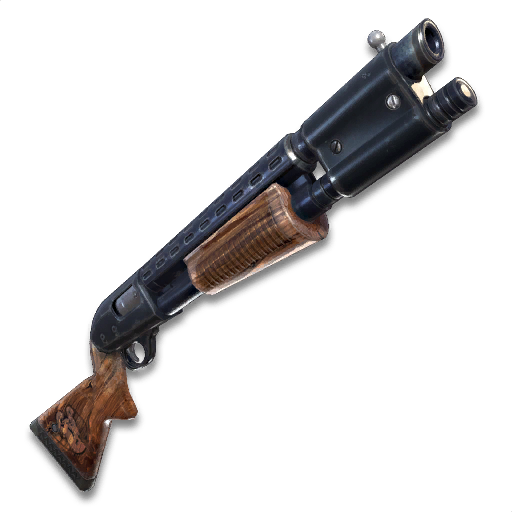

This page includes some of the main weapons in Fortnite Battle Royale.
This is the most common weapon in the game. This gun is used for mid-range combat and fires bullets at a constant rate when fired.

| Weapon | Damage | Magazine Size |
|---|---|---|
| M16 (Common) | 32 | 30 |
| M16 (Uncommon) | 33 | 30 |
| M16 (Rare) | 35 | 30 |
| SCAR (Epic) | 37 | 30 |
| SCAR (Legendary) | 39 | 30 |
| Scoped Rifle (Rare) | 23 | 20 |
| Scoped Rifle (Epic) | 24 | 20 |
This weapon does a large amount of damage when hit by it. It is used for long range combat. When hit by this weapon in the head, you are instantly knocked down and eliminated. This is because this weapon uses heavy bullets, which do a large amount of damage per shot.

| Weapon | Damage | Magazine Size |
|---|---|---|
| Bolt Action Sniper AWP (Rare) | 105 | 1 |
| Bolt Action Sniper AWP (Epic) | 110 | 1 |
| Bolt Action Sniper AWP (Legendary) | 116 | 1 |
| Semi-Auto Sniper (Epic) | 63 | 10 |
| Semi-Auto Sniper (Legendary) | 66 | 10 |
This weapon fires many bullets when the triggered is pulled. The shotgun is used for close combat and when all the bullets hit the player, it usually knocks down and eliminates the enemy. Due to the fact that it does so much damage, a pump action was included to create a delayed time before it can be fired again.
| Weapon | Damage | Magazine Size |
|---|---|---|
| Pump Shotgun (Common) | 90 | 5 |
| Pump Shotgun (Uncommon) | 95 | 5 |
| Tactical Shotgun (Common) | 67 | 8 |
| Tactical Shotgun (Rare) | 70 | 8 |
| Tactical Shotgun (Epic) | 74 | 8 |